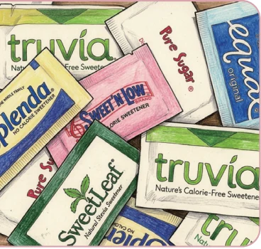

非營養性甜味劑僅適合短期減糖過渡，並非預防或控制糖尿病的長期策略
門診糖尿病患者常詢問「無糖飲料是否較健康」或「代糖會不會影響血糖」。綜合隨機對照試驗、大型前瞻性世代研究與世界衛生組織（WHO）2023 年指引，代糖雖可短期降低熱量與醣類攝取，但長期使用與心血管疾病及新診斷第二型糖尿病風險上升具相關性。

常用甜味劑分類、每日可接受攝取量（ADI）與臨床注意事項
非營養性甜味劑（Non-Nutritive Sweeteners, NNS）具有高甜度且幾乎不提供熱量，各國主管機關如美國 FDA、歐洲食品安全局（EFSA）及世界衛生組織（WHO / JECFA）均訂有可接受每日攝取量（Acceptable Daily Intake, ADI）以確保法規範圍內之毒理安全。然而，臨床衛教需特別提醒特定族群限制（如苯酮尿症 PKU 患者禁用阿斯巴甜）及赤藻糖醇高劑量耐受性問題。
| 甜味劑成分 | 中文名稱 | ADI (mg/kg/day) | 相較於蔗糖之甜度 | 注意事項 |
|---|---|---|---|---|
| aspartame | 阿斯巴甜 | 40 (EU/WHO)；50 (FDA) | 約 200 倍 | 不適用於 PKU 患者；常見於無糖飲料、口香糖 |
| sucralose | 三氯蔗糖 | 15 (EU/WHO)；5 (FDA) | 約 600 倍 | 高溫穩定；烘焙與飲料常用 |
| acesulfame-K | 醋磺內酯鉀 | 15 (FDA) | 約 200 倍 | 常與其他甜味劑混合使用 |
| saccharin | 糖精 | 5 (JECFA) | 約 300–400 倍 | 金屬後味；使用歷史最久 |
| steviol glycosides | 甜菊糖苷 | 4 (as Steviol equivalents) | 約 200–300 倍 | 以「steviol 當量」計算 |
| neotame | 新阿斯巴甜 | 2 (JECFA) | 約 7,000–13,000 倍 | 甜度極高；用量極低 |
| advantame | 阿德凡甜 | 5 (JECFA) | 約 20,000–37,000 倍 | 結構與 aspartame 類似 |
| erythritol | 赤藻糖醇 | ADI not specified | 約 0.6–0.7 倍 | 耐受度佳但高劑量可能腹瀉 |
短期減糖不代表長期改善葡萄糖恆定
系統性回顧與統合分析指出，多數隨機對照試驗（RCT）的追蹤時間較短（通常為數週至數個月）。在此期間以非營養性甜味劑取代蔗糖，對空腹血糖、糖化血色素（HbA1c）或胰島素相關指標並未顯示臨床顯著影響。短期效益主要來自於「降低總熱量與碳水化合物負荷」，而非直接改善胰島素功能。
以甜菊糖（Stevia）為例，近期統合分析顯示短期（小於 120 天）攝取雖對 HbA1c 與胰島素濃度無顯著影響，但有助於顯著降低血糖數值，且此效益在 BMI ≥ 25 kg/m²、糖尿病或高血壓族群中更為明顯。
大型前瞻性世代研究揭示心血管與新診斷糖尿病風險警訊
與短期隨機試驗不同，多項長期大型前瞻性世代研究一致觀察到人工甜味劑與不良代謝及心血管結局的統計正相關，且此關聯在既有的糖尿病與肥胖族群中更為顯著。
心血管疾病與死亡風險
- NutriNet-Santé 研究：人工甜味劑攝取量較高者，整體心血管疾病風險顯著上升；特別是阿斯巴甜與三氯蔗糖與中風及冠心病風險呈正相關。
- EPIC 與 UK Biobank 世代：每日飲用人工甜味飲料超過兩杯者，循環系統疾病死亡風險顯著增加，在糖尿病與肥胖族群更明顯。
- 美國心臟協會（AHA）聲明：甜味劑可作為短期減糖策略，但缺乏長期心血管保護的明確證據。
赤藻糖醇與血栓風險
- 近期研究（Nat Med 2023）發現，血中赤藻糖醇（Erythritol）濃度較高者，發生重大不良心血管事件（MACE）的風險增加。
- 潛在機轉可能與血小板反應性增強及血栓形成風險上升有關，高心血管風險患者應審慎評估攝取。
新診斷第二型糖尿病風險
- 多項前瞻性研究顯示長期攝取人工甜味飲料與新診斷 T2DM 風險增加相關。
- EPIC-InterAct 研究（追蹤約 26 萬名歐洲成人）：每日飲用至少一杯人工甜味飲料者，新診斷 T2DM 風險顯著上升；但在校正 BMI 後不再顯著，顯示肥胖可能為主要中介因子（Mediator）或存在反向因果關係。
超越體重中介：人工甜味劑影響血糖恆定的三大生物學機轉
近年機轉性研究證實，人工甜味劑對糖尿病風險的影響並非僅透過體重增加所中介，而是涉及腸道微生態、腸道內分泌受體與胰島細胞代謝壓力等多重生理路徑。
基層醫療臨床衛教原則：以「戒除甜味依賴」為核心
非營養性甜味劑在糖尿病飲食管理中可視為短期輔助工具，而非治療或預防策略；基層醫療應以降低對甜味的依賴為核心飲食原則，並個別評估患者的代謝與心血管風險。
門診實務建議
- 定位為短期過渡工具：協助習慣高糖飲料的患者逐步減糖，而非長期無限量替代白開水。
- 個別化風險評估：針對肥胖、既有糖尿病或高心血管風險族群，提醒長期大量飲用人工甜味飲料與赤藻糖醇的潛在風險。
衛教溝通重點
- 澄清 ADI 迷思：向病人說明「符合法規安全劑量」不等於「長期喝有益代謝或保護心臟」。
- 最終飲食目標：逐步降低味覺對甜味的依賴，回歸無糖茶飲、白開水與原型食物。
主要參考資料
- Toews I, et al. Association between intake of non-sugar sweeteners and health outcomes: systematic review and meta-analyses. BMJ 2019; 364: k4718.
- Suez J, et al. Personalized microbiome-driven effects of non-nutritive sweeteners on human glucose tolerance. Cell 2022; 185: 3307-28.
- Pepino MY. Metabolic effects of non-nutritive sweeteners. Physiol Behav 2015; 152: 450-5.
- Debras C, et al. Artificial sweeteners and risk of cardiovascular diseases: NutriNet-Santé cohort. BMJ 2022; 378: e071204.
- Mullee A, et al. Association between soft drink consumption and mortality in 10 European countries. JAMA Intern Med 2019; 179: 1479-90.
- Sun T, et al. Artificial sweeteners and risk of incident cardiovascular disease and mortality: UK Biobank. Cardiovasc Diabetol 2024; 23: 233.
- World Health Organization. Guideline on non-sugar sweeteners. Geneva: WHO; 2023: 17-19.
- International Diabetes Federation. Taiwan. IDF Diabetes Atlas. 2024.
- Gardner C, et al. Nonnutritive sweeteners: AHA/ADA scientific statement. Diabetes Care 2012; 35: 1798-808.
- U.S. FDA. High-intensity sweeteners; JECFA / WHO Technical Report Series (2017, 2021).
- Zare M, et al. Effect of stevia on blood glucose and HbA1c: a meta-analysis. Diabetes Metab Syndr 2024; 18: 103092.
- Witkowski M, et al. The artificial sweetener erythritol and cardiovascular event risk. Nat Med 2023; 29: 710-8.
- Johnson RK, et al. Low-calorie sweetened beverages and cardiometabolic health: AHA science advisory. Circulation 2018; 138: e126-e140.
- Debras C, et al. Artificial sweeteners and risk of type 2 diabetes: NutriNet-Santé cohort. Diabetes Care 2023; 46: 1681-90.
- InterAct Consortium, et al. EPIC-InterAct study. Diabetologia 2013; 56: 1520-30.
- Rother KI, et al. How non-nutritive sweeteners influence hormones and health. Trends Endocrinol Metab 2018; 29: 455-67.